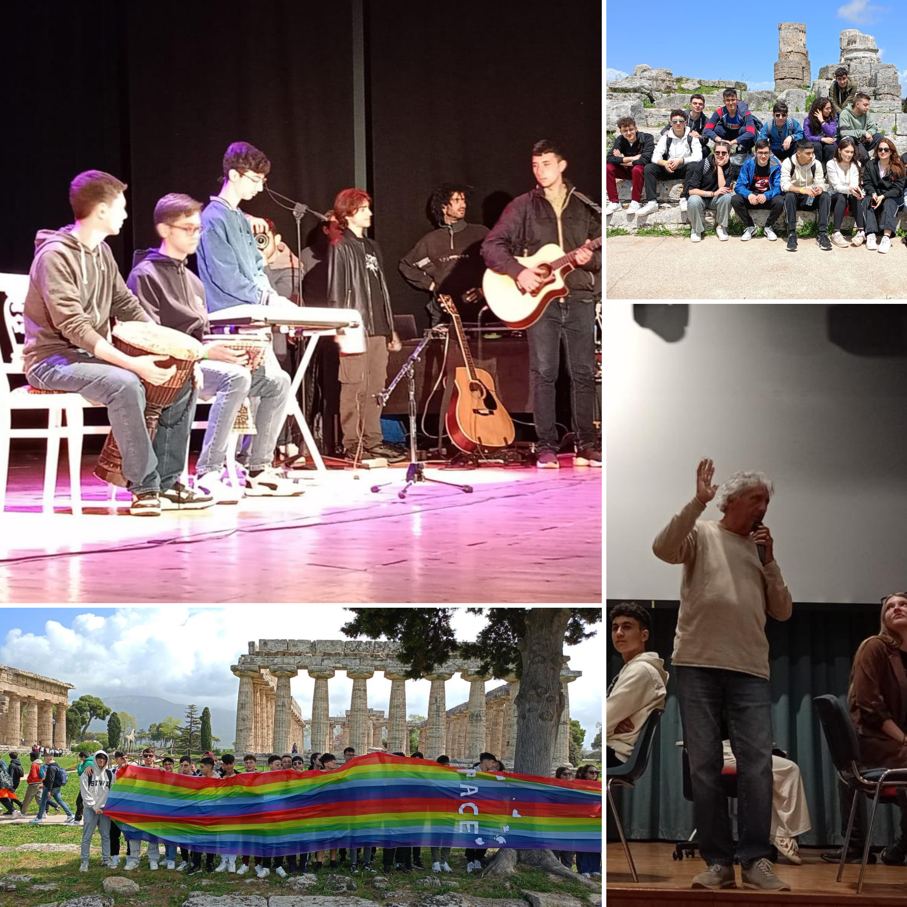
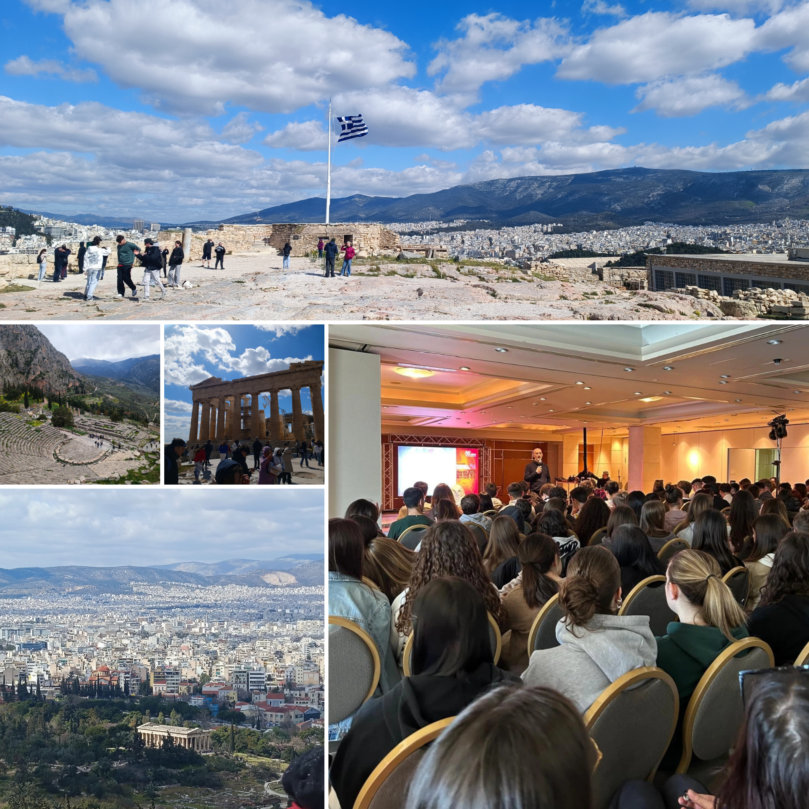

Attività PCTO · 2023–2025
Due edizioni del Festival della Filosofia in Magna Grecia: un percorso che unisce pensiero critico, esperienze laboratoriali e i luoghi fondativi della civiltà occidentale.
Chi organizza
Il Festival della Filosofia in Magna Grecia è un progetto culturale e formativo che promuove la diffusione del pensiero filosofico attraverso attività esperienziali, laboratori e percorsi di cittadinanza attiva. L'obiettivo è avvicinare gli studenti alla filosofia non solo come disciplina scolastica, ma come strumento per comprendere la realtà, sviluppare il pensiero critico e confrontarsi con le grandi questioni del presente.
Prima edizione · Aprile 2024
L'edizione 2024 del Festival, svoltasi nel Cilento, era dedicata al tema della Dike, termine greco che indica la giustizia, l'equilibrio e l'ordine che regolano la vita individuale e collettiva. Ispirandosi al pensiero di Parmenide, il percorso proponeva una riflessione sul rapporto tra verità e opinione, invitando i partecipanti a interrogarsi sul significato della giustizia nella società contemporanea e sulle sfide poste dall'innovazione tecnologica e dall'intelligenza artificiale.
"Dike: la giustizia come equilibrio tra verità e opinione, tra passato e presente."
Durante il Festival ho partecipato a dialoghi filosofici, visite culturali e attività laboratoriali svolte tra Velia, Paestum, Ascea e Vallo della Lucania. Il contatto diretto con luoghi di straordinario valore storico e archeologico ha reso l'esperienza particolarmente coinvolgente, permettendo di collegare la riflessione filosofica alle sue radici storiche e culturali.
Ho scelto il Laboratorio di Musica, dedicato alla riscoperta della dimensione rituale della musica attraverso il ritmo, il movimento e l'improvvisazione. Ho utilizzato inizialmente un sintetizzatore e successivamente una tastiera, eseguendo una sequenza di accordi con timbro assimilabile al violino. Nella parte conclusiva ho improvvisato con suono di pianoforte, accompagnando la chiusura del brano. Gli altri partecipanti utilizzavano strumenti a percussione — tamburi, tamburelli, djembe, conga, piatti e grancassa — mentre il tutor impiegava il theremin.
L'esperienza si è conclusa con la presentazione pubblica al Teatro di Vallo della Lucania, durante gli eventi denominati Unanime e Agon.

Seconda edizione · Marzo 2025

L'edizione 2025, svolta in Grecia, era dedicata al tema della Philia, una delle forme di amore descritte dai Greci antichi. Diversamente dall'amore passionale, la philia rappresenta l'amicizia autentica, fondata sulla fiducia reciproca, sul rispetto e sulla condivisione. Attraverso questo tema il Festival ha proposto una riflessione sul valore delle relazioni umane, del dialogo e della capacità di costruire legami anche tra persone provenienti da culture e contesti differenti.
Il percorso si è sviluppato tra alcuni dei luoghi più significativi della civiltà greca, tra cui Atene ed Epidauro. Oltre alle attività laboratoriali, la partecipazione al Festival ha offerto l'opportunità di vivere un'esperienza internazionale di confronto e collaborazione, approfondendo il legame tra filosofia, storia e cittadinanza europea.
Per questa edizione ho scelto il Laboratorio di Oratoria e Public Speaking, finalizzato allo sviluppo delle competenze comunicative e all'apprendimento delle principali tecniche dell'oratoria classica e moderna: struttura del discorso, gestione della comunicazione davanti a una platea, postura, dizione e strategie argomentative.
Ho partecipato a un dibattito in cui due gruppi sostenevano tesi opposte sull'origine dei pregiudizi: da un lato l'idea che siano appresi attraverso il contesto sociale, dall'altro la convinzione che derivino dalla paura verso ciò che si percepisce come diverso. I momenti di dialogo e condivisione hanno reso particolarmente concreto il significato della philia, trasformando il Festival in un'occasione di crescita sia culturale sia personale.
Cronologia
Dike — Festival nel Cilento · 30 ore
Velia, Paestum, Ascea, Vallo della Lucania. Laboratorio di Musica. Esibizione finale al Teatro di Vallo della Lucania durante gli eventi Unanime e Agon.
Philia — Festival in Grecia · 40 ore
Atene ed Epidauro. Laboratorio di Oratoria e Public Speaking. Dibattito sull'origine dei pregiudizi. Presentazione finale dei lavori.
Risultati
Entrambe le esperienze mi hanno permesso di sviluppare competenze trasversali particolarmente importanti: capacità comunicative, lavoro di squadra, ascolto attivo e gestione delle relazioni all'interno di un gruppo. I laboratori hanno favorito lo sviluppo della creatività, della capacità di adattamento e della partecipazione responsabile.
Dal punto di vista personale, il Festival ha contribuito a rafforzare la mia capacità di esprimermi in pubblico e di confrontarmi con idee differenti — aspetti fondamentali sia nel percorso universitario sia nella futura vita professionale.
Valutazione
Punti di forza
L'approccio interdisciplinare ha unito filosofia, arte, musica, comunicazione e storia in un unico percorso formativo. Particolarmente significativa la possibilità di visitare luoghi di grande valore storico, vivendo la filosofia come esperienza concreta e condivisa.
Criticità
Il tempo limitato dedicato ai laboratori ha reso difficile approfondire e perfezionare gli elaborati finali. Più ore avrebbero consentito di valorizzare ulteriormente il lavoro svolto dai partecipanti.
Riflessione
I Festival della Filosofia rappresentano l'esperienza PCTO che più mi ha coinvolto dal punto di vista umano e culturale. Oltre ad aver ampliato le mie conoscenze filosofiche, mi hanno offerto occasioni concrete di crescita personale, collaborazione e confronto.
L'incontro con studenti provenienti da realtà diverse, il contatto diretto con i luoghi della Magna Grecia e la partecipazione attiva ai laboratori hanno reso queste attività particolarmente significative all'interno del mio percorso scolastico.
"Un viaggio che continua ad avere un unico obiettivo: imparare, comprendere e andare oltre i propri limiti."